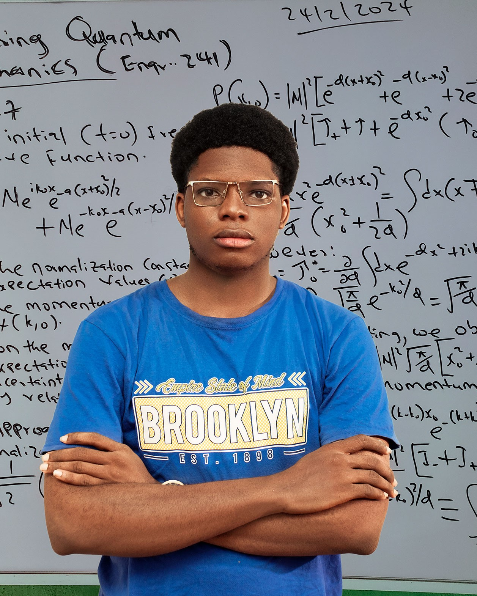
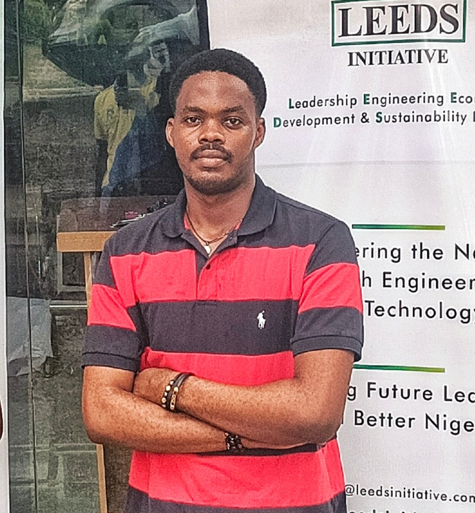

OUR STORY
The Mathsters Alliance was forged at the intersection of mathematical rigor and engineering innovation. Born from the halls of the University of Ibadan, our collective emerged to challenge the boundaries of foundational calculus and fluid statics. We recognized that while the C-Series represents a competition, it is truly a gateway—a crucible designed to refine the analytical prowess of the next generation of engineers. Our mission is to preserve the standard of excellence that defines our institution, ensuring that every 100L student who steps into this arena leaves with a deeper mastery of the language of the universe.
THE ARCHITECTS
Every elite competition is built on the vision of those who refuse to settle for mediocrity. Meet the five minds behind The Mathsters Alliance—engineers, strategists, and problem-solvers dedicated to setting the new standard for academic rigor at the University of Ibadan.

UGWUOKE ANTHONY
Role

OLUWADAYOMI TOBILOBA

KAMORUDEEN TOYOSI
Role

AYANWALE JOHN
Role

GANIYU MOJEED